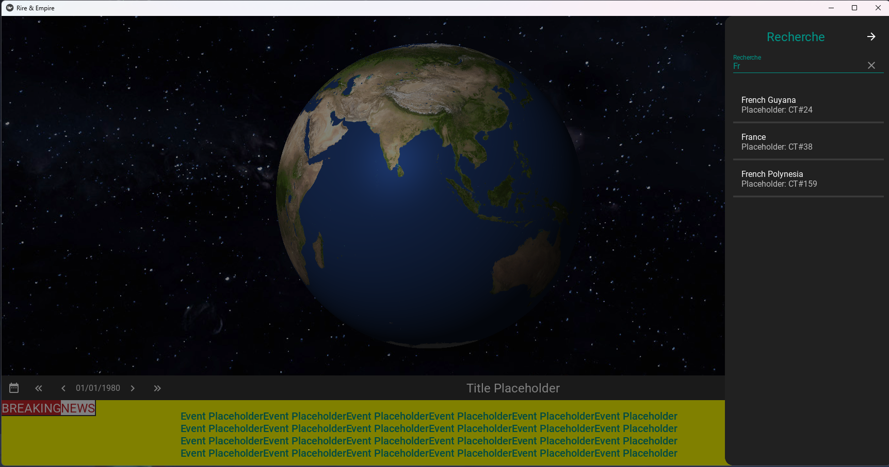

Projects
Rire & Empire
It is a geopolitical simulation project, developed in Python for the front end, and in C# for the back end, where one can observe interactions between countries in a Cold War context (primarily wars and alliances).
Geometry Dash
I developed a Geometry Dash-style game in C++. I created the gameplay, a level editor, and an AI that uses a genetic algorithm to learn how to play the game by using triggers that detect which obstacles are near the player.
Tetris
I challenged myself to recreate Tetris over a weekend, so I made this game in Pygame. It was quite an interesting experience.
Sheep qui peut !
During our first year at engineering school, we had to complete a project in C using SDL in groups of three. We created "Sheep qui peut!" (the name was wonderfully chosen by ChatGPT), which features a wolf, a shepherd, and some sheep. The wolf learns to eat the sheep while avoiding the shepherd as best as possible using artificial intelligence, specifically a genetic algorithm.